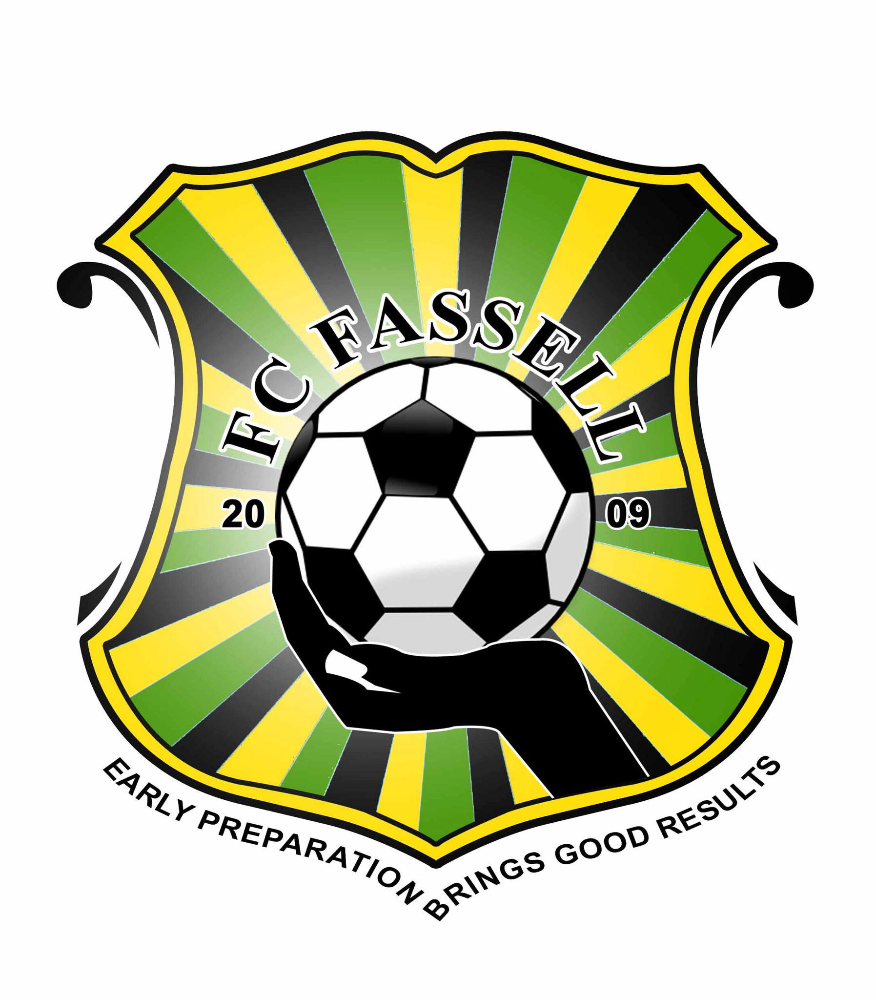

Introduction
FC is a professional football club base in Liberia, known for its passionate players and contribution to the development of Liberian footbll. Founded in 2009, Football Club Fassell, commonly known as FC Fassell, has rapidly ascended the ranks of Liberian football, earning the nickname "The Soccer Missionaries" for their dedication to the sport and their mission to elevate the standard of football in Liberia. Based in Monrovia, FC Fassell has become a beacon of ambition and excellence, with a growing reputation both domestically and on the African continent.
Hightlight
- Founded: 2008
- Nickname: "Soccer Missionaries
- Played in the Liberian First Division